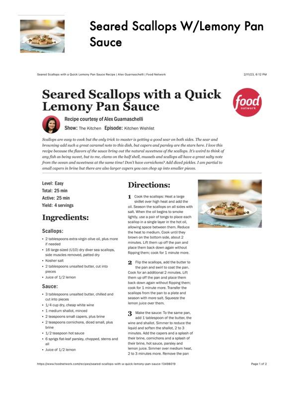

Seared Scallops W/Lemony Pan

Original cookbook page 431
Ingredients
- Scallops:
- + 2 tablespoons extra-virgin olive oil, plus more
- if needed
- + 16 large-sized (U0) dry diver sea scallops,
- side muscles removed, patted dry
- + Kosher salt
- + 2 tablespoons unsalted butter, cut into
- pieces
- * Juice of 1/2 lemon
- Sauce:
- + 3 tablespoons unsalted butter, chilled and
- cut into pieces
- + 1/4 cup dry, cheap white wine
- * 1 medium shallot, minced
- * 2 teaspoons small capers, plus brine
- + 2 teaspoons cornichons, diced small, plus
- brine
- + 4/2 teaspoon hot sauce
- * 6 sprigs flateaf parsley, chopped, stems and
- all
- + Juice of 1/2 lemon
Instructions
- Cook the scallops: Heat a large skillet over high heat and add the oil. Season the scallops on all sides with salt. When the oil begins to smoke lightly, use a pair of tongs to place each scallop ina single layer in the hot oil, allowing space between them. Reduce the heat to medium. Cook until they brown on the bottom side, about 2 minutes. Lift them up off the pan and place them back down again without flipping them; cook for 4 minute more.
- Flip the scallops, add the butter to the pan and swirl to coat the pan. Cook for an additional 2 minutes. Lift them up off the pan and place them back down again without flipping them; cook for 1 minute more. Transfer the scallops from the pan to a plate and season with more salt. Squeeze the lemon juice over them. Make the sauce: To the same pan, add 4 tablespoon of the butter, the wine and shallot. Simmer to reduce the liquid and soften the shallot, 2 to 3 minutes. Add the capers and a splash of their brine, comichons and a splash of their brine, hot sauce, parsley and lemon juice. Simmer over medium heat, 2 to 3 minutes more. Remove the pan httpsif/www-foodnetwork.com/recipes/seared-scallops-with-a-quick-lemony-pan-sauce-13498019
Recipe #431 from collection